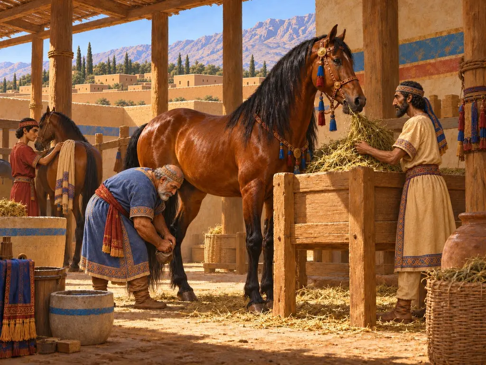
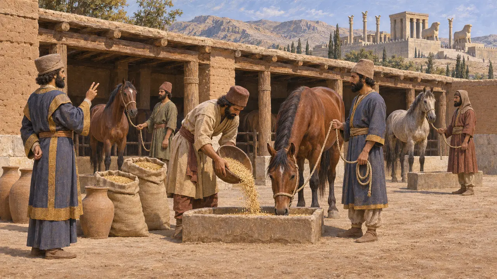
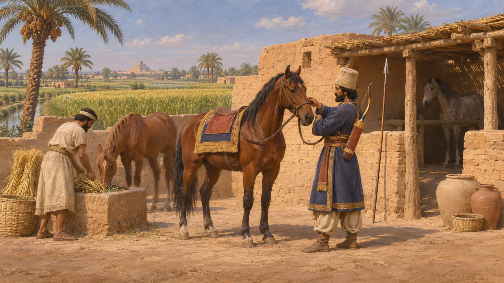
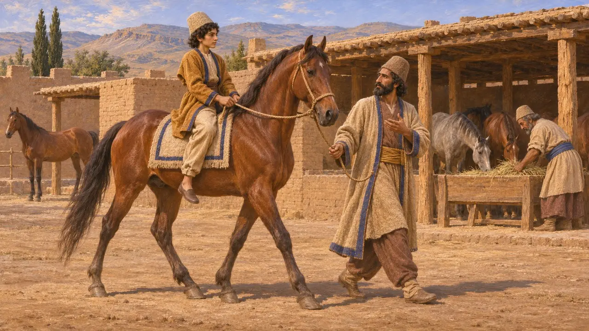
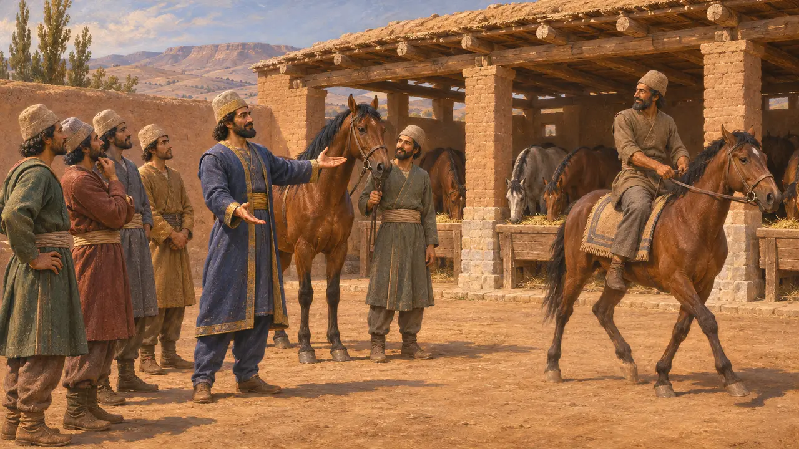
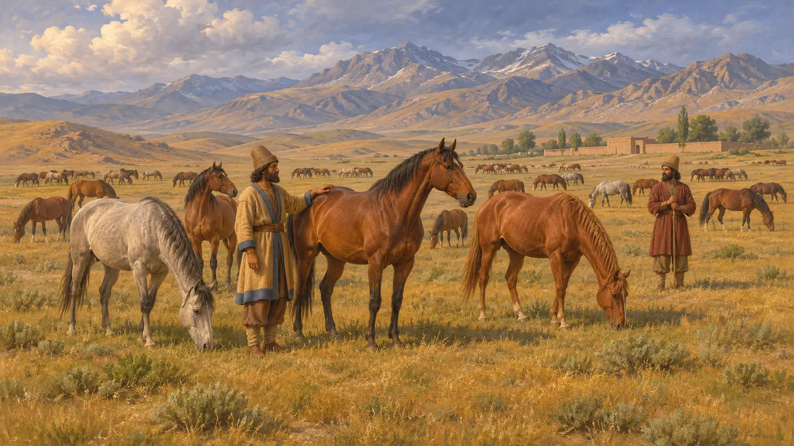

Estábulo da Cavalaria
Abrigo e alimentação dos cavalos da cavalaria do Rei, Império Persa, séculos VI e V AEC
No jogo: Nível 1: O Túmulo do Fundador
Os cavaleiros estavam entre as tropas mais valorizadas dos reis aquemênidas, e os cavalos precisavam ser alimentados, tratados e manejados com regularidade. As tabuletas de Persépolis mostram funcionários distribuindo grãos para os cavalos, e os arquivos babilônicos mostram terras concedidas em troca de serviço na cavalaria. Nenhum complexo de estábulos deste período foi identificado com segurança em escavações, por isso se sabe menos sobre como os cavalos eram abrigados do que sobre como eram alimentados.
No jogo: No jogo, cavalariços e mestres de equitação treinam os cavaleiros persas, e carroças trazem armas e cevada, como sugerem as distribuições de forragem registradas nas tabuletas. Um único estábulo de treinamento é uma simplificação: muitos cavaleiros aprendiam ainda meninos ou serviam em troca de terras concedidas.

Rações de grãos para os cavalos
Nos registrosAs tabuletas da Fortificação de Persépolis, escritas em elamita por volta de 509-493 AEC, registram grãos distribuídos como forragem para cavalos. Uma parte ia para os cavalos reais e outra para as montarias de viajantes e mensageiros nas estradas. Os funcionários contavam os animais e fixavam uma ração para cada um, assim como faziam com os trabalhadores. Essa contabilidade cuidadosa mostra que a criação de cavalos fazia parte da rotina da economia real em Pérsis.
R. Hallock, Persepolis Fortification Tablets, 1969

Terra de cavalo na Babilônia
Nos registrosArquivos comerciais de Nippur, sobretudo os textos dos Murashu do final do século V, mencionam propriedades chamadas terras de cavalo. Os detentores dessas terras deviam à coroa um soldado montado com seu equipamento e, às vezes, podiam pagar em prata em vez disso. Esses textos são posteriores ao período do jogo, mas mostram uma das maneiras pelas quais o império recrutava cavaleiros sem mantê-los todos nos estábulos reais.
M. Stolper, Entrepreneurs and Empire, 1985

A equitação aprendida desde a infância
Relato antigoHeródoto conta que os meninos persas aprendiam três coisas entre os cinco e os vinte anos: cavalgar, atirar com o arco e dizer a verdade. Ele também escreve que um governador da Babilônia, em sua época, mantinha um enorme haras de garanhões e éguas. Descreve ainda os grandes cavalos niseus que marcharam com Xerxes em 480 AEC. Segundo seu relato, a equitação era uma arte da nobreza persa tanto quanto um ofício de cavalariços.
Herodotus 1.136; Herodotus 1.192; Herodotus 7.40

O Ciro de Xenofonte faz dos persas cavaleiros
Lenda posteriorNa Ciropedia, escrita mais de um século e meio depois de Ciro, Xenofonte mostra Ciro persuadindo os persas, então em sua maioria soldados de infantaria, a se tornarem cavaleiros. A obra é um retrato idealizado de um governante modelo, não uma história. Pode refletir uma memória real de que a cavalaria persa cresceu sob Ciro, mas suas cenas e discursos não podem ser tomados como fatos.
Xenophon, Cyropaedia 4.3

Onde os cavalos eram mantidos
DisputadoOs arqueólogos não identificaram com segurança nenhum estábulo aquemênida em Persépolis, Susa ou Pasárgada. Os escritores gregos destacam grandes manadas nos pastos da Média, o que sugere que muitos cavalos viviam em campo aberto e em propriedades rurais, e não em baias. Os historiadores ainda debatem qual era o tamanho da cavalaria real permanente, em comparação com os cavaleiros recrutados por meio de concessões de terras e entre os povos súditos.
P. Briant, From Cyrus to Alexander, 2002
Fontes
- R. Hallock, Persepolis Fortification Tablets, 1969
- M. Stolper, Entrepreneurs and Empire, 1985
- Herodotus 1.136; 1.192; 7.40
- P. Briant, From Cyrus to Alexander, 2002
- Xenophon, Cyropaedia 4.3